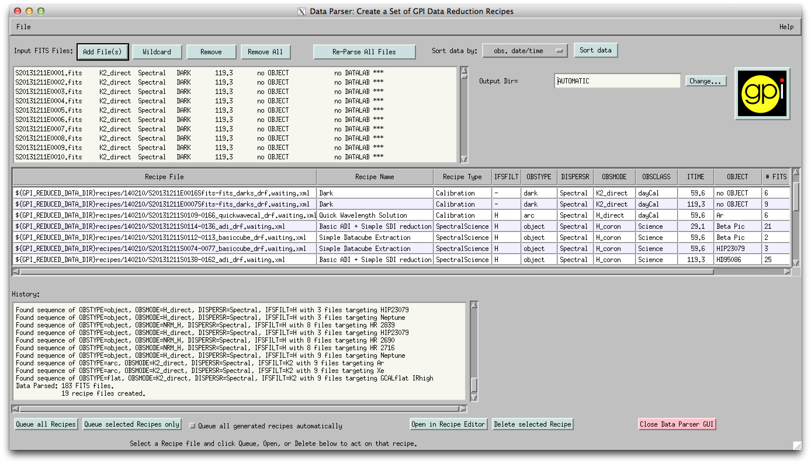

The Data Parser looks at a collection of many FITS files (e.g. all the files from a given night, or a given observing program), and based on header keywords, it generates appropriate recipes to reduce the available data, including both calibration files and science data. The Data Parser is intended to be the starting point for most data reduction tasks. Its output recipes can be further customized using the Recipe Editor if desired.
The Parser will preferentially identify calibration files and will order their reduction recipes first, so that the up-to-date calibrations can be used for following science reductions.
The parser scans through a collection of input files to determine the following for each file:
- filters (Y, J, H, K1, K2)
- obstype (dark, flat, wavelength solution, object )
- disperser (spectral or polarimetric prism)
- GPI Obsmode (coronagraphic, direct imaging, etc)
- obsclass (Science, Astrometric Standard, etc)
- integration time
- Target object name
The recipes created by the Parser must be placed into the recipe queue to be reduced. There’s a button on screen to do this. It’s possible to configure the Parser to queue recipes automatically - but it is often the case that you want to check out and maybe adjust the automatic recipes before running them.
The Data Parser tool therefore allows the user to view and edit the created recipes. Select the recipe to be edited and push the “Open in Recipe Editor” button to open the Recipe Editor.
To access the data parser, from the GPI launcher, press the Data Parser button. (Alternatively to start manually in IDL, run parser = obj_new('parsergui').) The below figure indicates the main sections of the Data Parser.

Input Files: Upon opening the Data Parser, the user must Add Files using the buttons in the top left of the window. The file names and selected header values will appear in the text box below. Fits file can be removed from this list by first selecting the file and then the ‘Remove’ button. Alternatively, the ‘Remove All’ button will remove all the fits files from the Data Parser window. The ‘Wildcard’ button allows adding all files that match a given regular expression such as ‘S20140702S*.fits’.
Generated Recipes: The Data Parser will read in the headers of the FITS files, organize them into groups pf files, and determine what type of recipe is most appropriate for each group. The resulting recipes are listed in the middle table of the GUI, including filenames, the name of each recipe template used, and a summary of the instrument configuration keywords. To view or edit a recipe, select the desired recipe in the table and press the ‘Open in Recipe Editor’ button in the tool bar at bottom.
Command buttons: A button bar at the bottom provides the main commands, in addition to the ‘Open in Recipe Editor’ button. If the user wishes to use all the generated recipes, the ‘Queue all Recipes’ button may be used, or the user may select a subset of the recipes displayed in the table and use the ‘Queue selected Recipes only’ button. Additionally, the user may delete any recipe by selecting the Recipe File in the table and using the ‘Delete Selected Recipe’ button at the bottom middle of the window.
Log messages: A log of actions is displayed in the bottom right. This can at times help diagnose what the parser is doing if the parsing has unexpected results.
Other functionality: The Data Parser also includes the ability to sort the data by either the Date of Observation, the Filename, or the date the file was created. The output Data directory for any fits files created by a recipe can be changed manually in upper right of the data parser window. By default, the output directory used is the Reduced directory that was set up during pipeline configuration.
{kind=link}